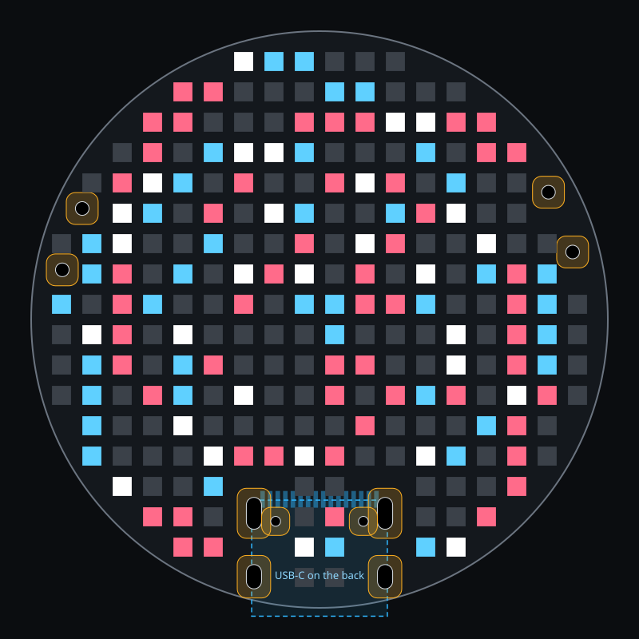
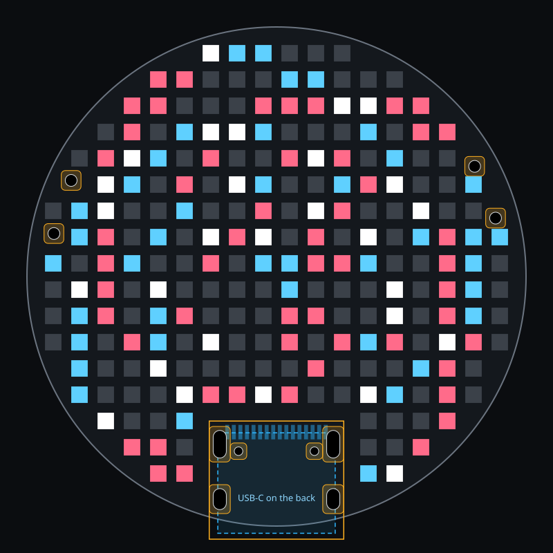
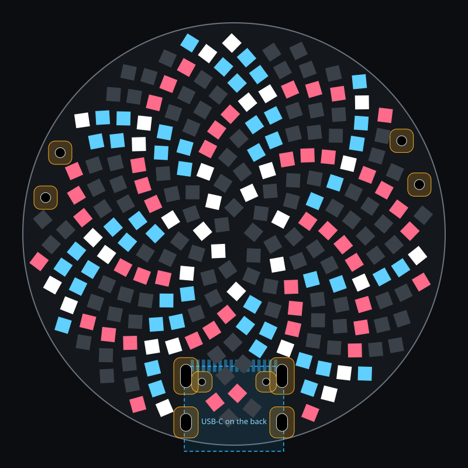
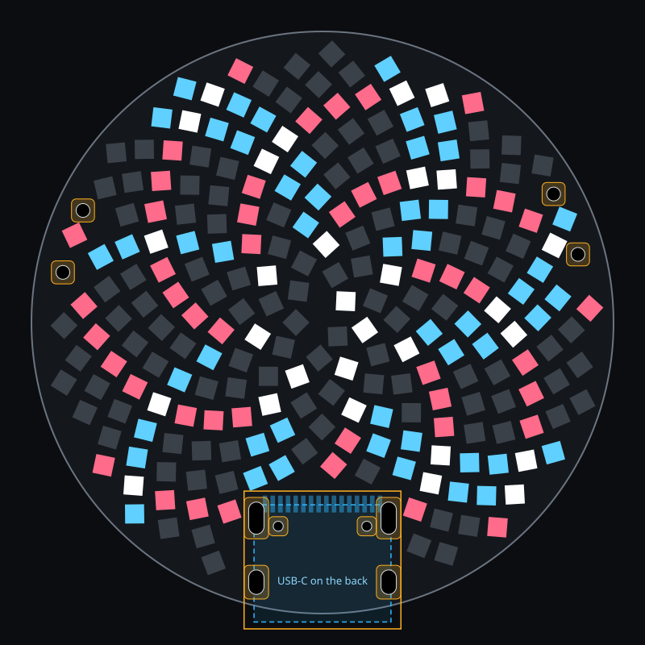
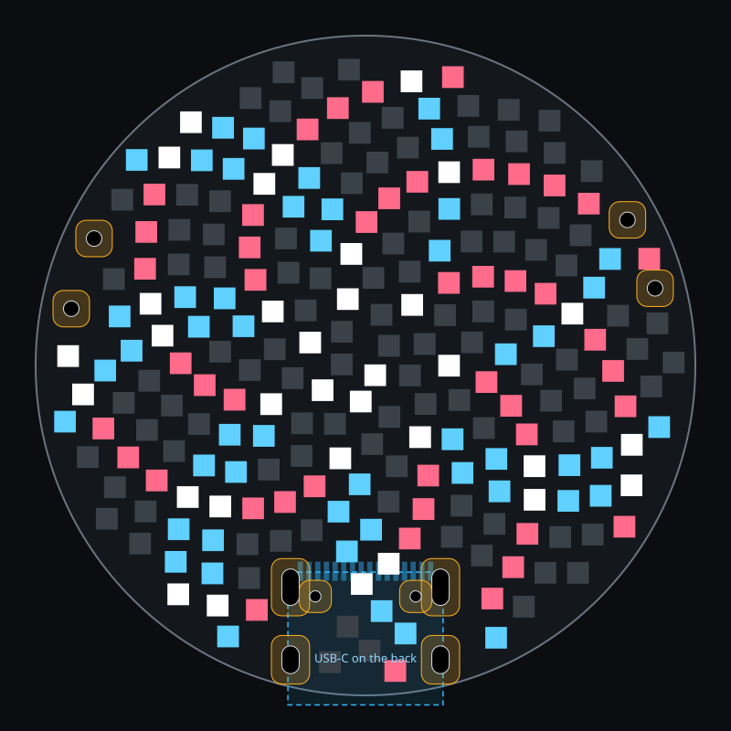
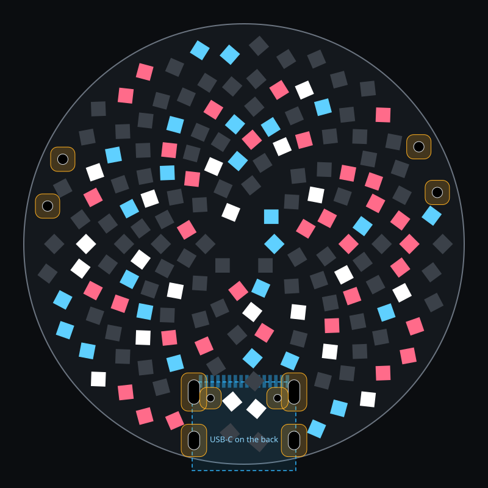
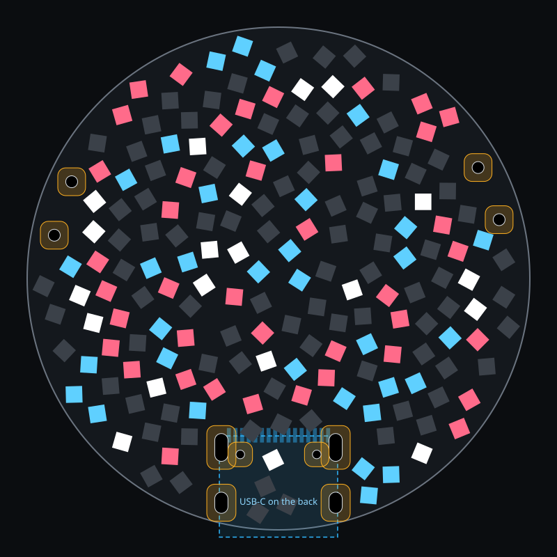
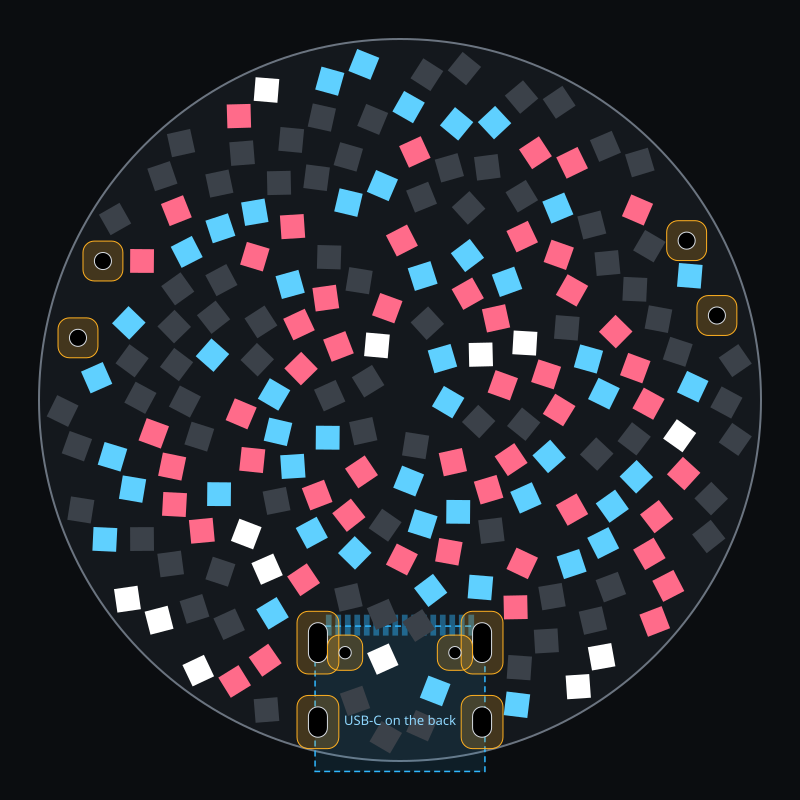

LED pattern study
38 mm board, seen from the LED side, with the back-side USB-C drawn through it. A study only: the board in hw/ is unchanged. Colours mark spiral arms, as firmware could light them. Land gaps come from a geometry model, and none of these has been routed. Grid plans use a 2 mm pitch.
one windopposing windbothother LEDsthrough-holeLED keepoutUSB-C, back
| Plan | LEDs | Min pitch, mm | Min pad gap, mm | LED to USB-C hole, mm | LED to edge, mm | Pad gap |
|---|---|---|---|---|---|---|
| A. 2 mm grid, wider hole margin | 234 | 2.00 | 0.75 | 0.94 | 0.50 | routable gap |
| B. 2 mm grid, clear bay over USB-C | 228 (6 short) | 2.00 | 0.75 | 1.55 | 0.50 | routable gap |
| C. Sunflower, LEDs turned with their angle | 234 | 1.83 | 0.29 | 0.61 | 0.37 | routable gap |
| D. Sunflower, turned, clear bay over USB-C | 234 | 1.80 | 0.26 | 0.43 | 0.37 | routable gap |
| E. Sunflower, LEDs all square to the board | 234 | 1.73 | 0.10 | 0.81 | 0.40 | too tight to route |
| F. Nested golden spirals | 167 (67 short) | 1.90 | 0.16 | 0.62 | 0.98 | too tight to route |
| G. Overlaid opposing arms, 13 each way | 186 (48 short) | 1.91 | 0.28 | 0.84 | 0.39 | routable gap |
| H. Overlaid opposing arms, 21 each way | 191 (43 short) | 1.91 | 0.17 | 0.64 | 0.39 | too tight to route |


234 LEDs. Straight columns and rows; the routing plan already worked out still applies.


228 (6 short) LEDs. A clean notch instead of scattered gaps. Only 228 sites fit on this grid.


234 LEDs. Golden angle. Opposing spirals appear by themselves, 21 and 34 of each wind near the rim, 8 and 13 near the centre. Pink and blue mark every third arm of each wind.


234 LEDs. Same lattice with a deliberate notch: it packs tighter to make up the 234.


234 LEDs. Simplest to assemble, but corners nearly touch, too tight to route.


167 (67 short) LEDs. True golden spirals with 5, 8, 13 then 21 arms in nested zones; an LED at each crossing of opposing arms.


186 (48 short) LEDs. LEDs strung along true golden arcs, clockwise and anticlockwise. The arcs show as lines, with diamond gaps between.


191 (43 short) LEDs. Finer weave of the same idea.